CDG → LAX
Voiture, courses, villa
UN PROJET UN PEU FOU. MAIS VRAIMENT FAISABLE.
CALIFORNIA
DREAMING.
Et si, cette fois, on y allait vraiment ?
LOS ANGELES↗LAS VEGAS↗NEW YORK
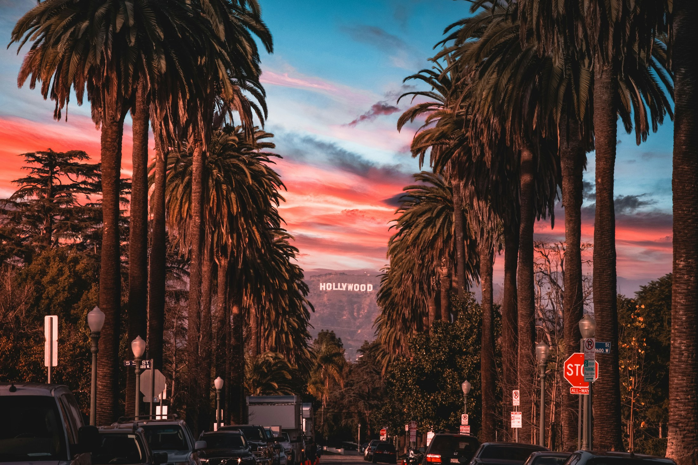
UN PROJET UN PEU FOU. MAIS VRAIMENT FAISABLE.
Et si, cette fois, on y allait vraiment ?
LE CONCEPT
Une maison au soleil. Les clés d’une belle voiture.
Et personne pour nous dire de rentrer.
On se fait plaisir intelligemment.
De vraies expériences, et le temps d’en profiter.
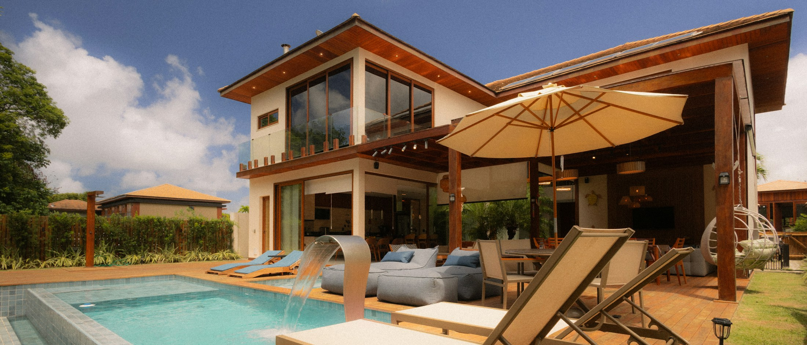
Notre mood de la semaine ☀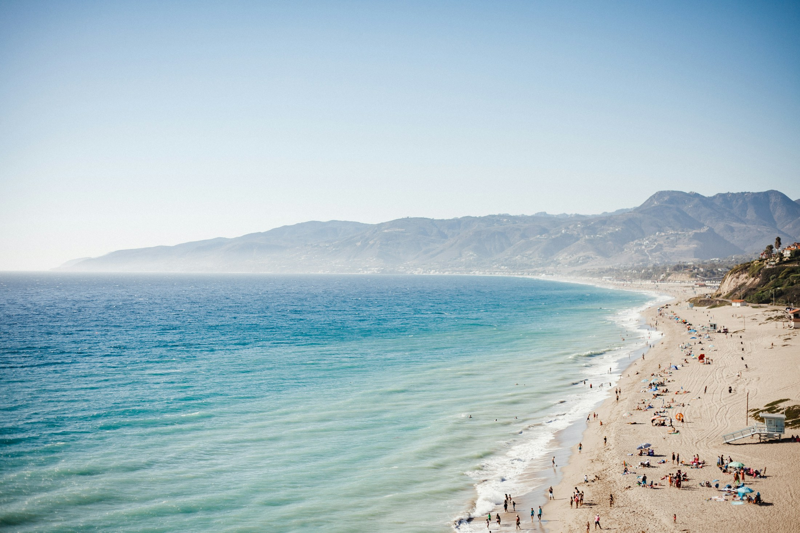
Un jeudi normal. À Malibu.LE GRAND TRAJET
Paris → Los Angeles → Las Vegas
→ New York → Paris
Départ samedi · retour en France mercredi
11 jours sur place, 12 jours calendaires avec le retour.
LE FILM, JOUR APRÈS JOUR
CDG → LAX
Voiture, courses, villa
Piscine & repos
On récupère
Downtown → Venice
→ Santa Monica
Hollywood & Griffith
Sport américain le soir*
Villa, musique, repos
Aucune obligation
La côte en voiture
Malibu & plages
Universal Studios
Une journée complète
Vol depuis LA
Hôtel & Strip de nuit
Vegas → New York
Arrivée le soir, repos
Downtown, Central Park
Times Square de nuit
Dernière balade
Vol de nuit vers Paris
Le bon rythme à LA.
* Selon calendrier sportif. Arrivée à Paris le mercredi. Dates et horaires précis à fixer ensemble.
J01 · SAMEDI · LE DÉPART
Départ le matin. Arrivée dans la journée.
Merci le décalage horaire.
Petit-déj, snacks, chips, eau, softs, bières et de quoi faire un barbecue.
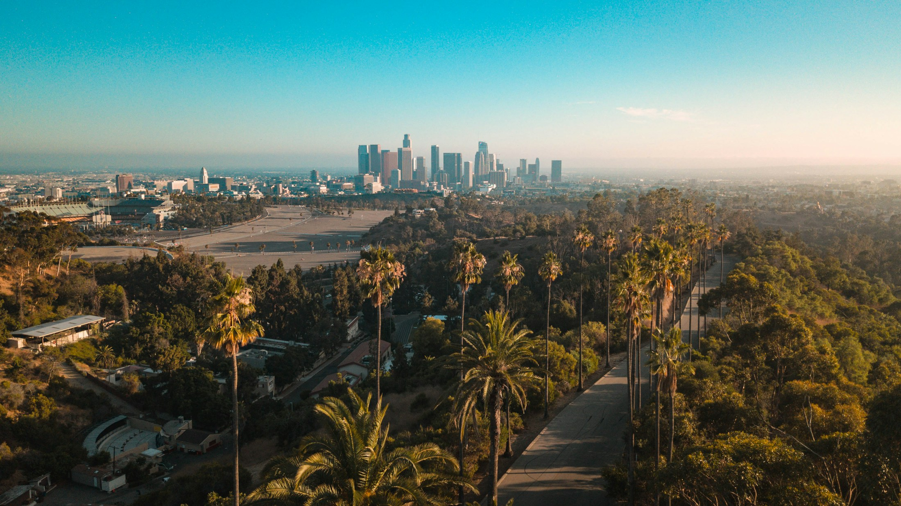
34°03′ N · 118°15′ W7 NUITS · UNE VRAIE BASE À NOUS
Une maison pour cinq. Une piscine privée.
Et deux journées entières pour en profiter.
Les quartiers à explorer
Sherman Oaks · Studio City · Encino · Woodland Hills
7 JOURS · LES CLÉS DE LA LIBERTÉ
Une belle berline. Du confort.
La côte californienne derrière les vitres.
5 adultes + 5 bagages : vérifier le coffre et le confort.
Catégorie premium et âge du conducteur à confirmer au devis.
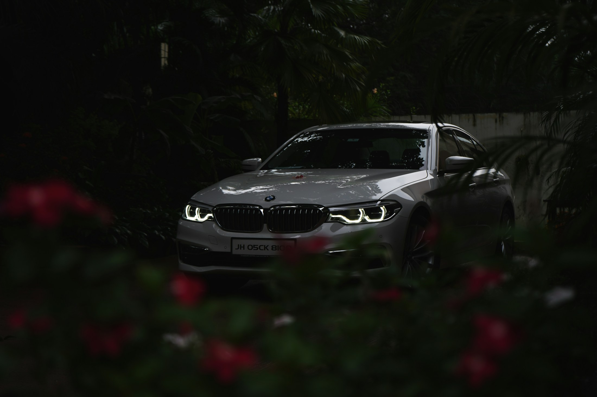
MODÈLE ILLUSTRATIF · CATÉGORIE SELON DISPONIBILITÉ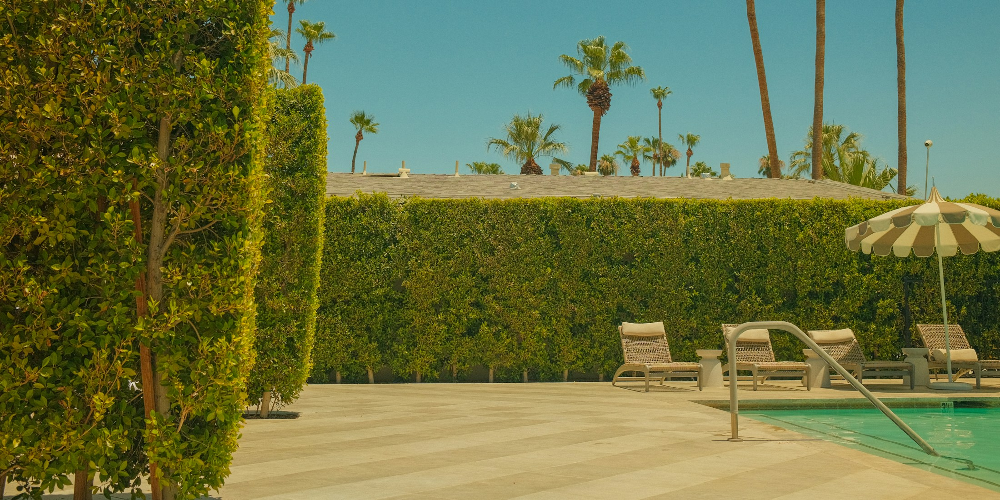
J02 · DIMANCHE · PREMIÈRE JOURNÉE CHILL
Et c’est exactement le programme.
Après le vol et le décalage horaire,
la meilleure activité, c’est de n’en avoir aucune.
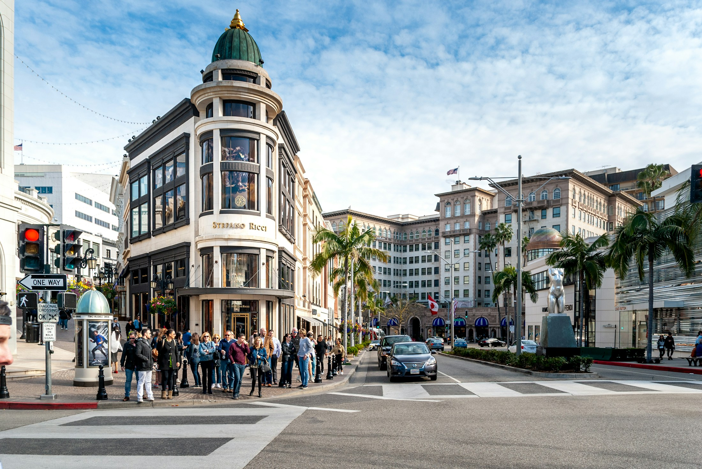
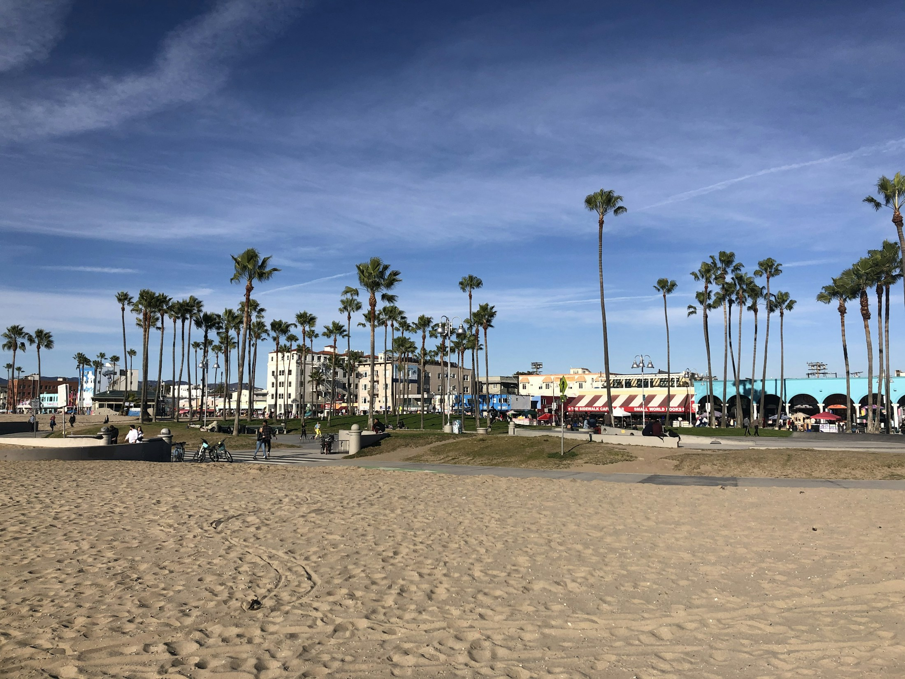
J03 · LUNDI · LA JOURNÉE GTA V
Les lieux qui ont inspiré le jeu. Toutes les images ici sont des photographies réelles de Los Angeles.
UNE TRAVERSÉE DE LA VILLE
Les gratte-ciel. Le décor est planté.
Les villas, les rues bordées de palmiers.
Les vitrines. Et surtout les voitures.
Un passage par les avenues iconiques.
Boardwalk, skatepark et Muscle Beach.
Le Pier. Le Pacifique. Le sunset.
Départ tôt, pauses souples. Les étapes Beverly Hills / Rodeo / West Hollywood restent courtes selon le trafic.
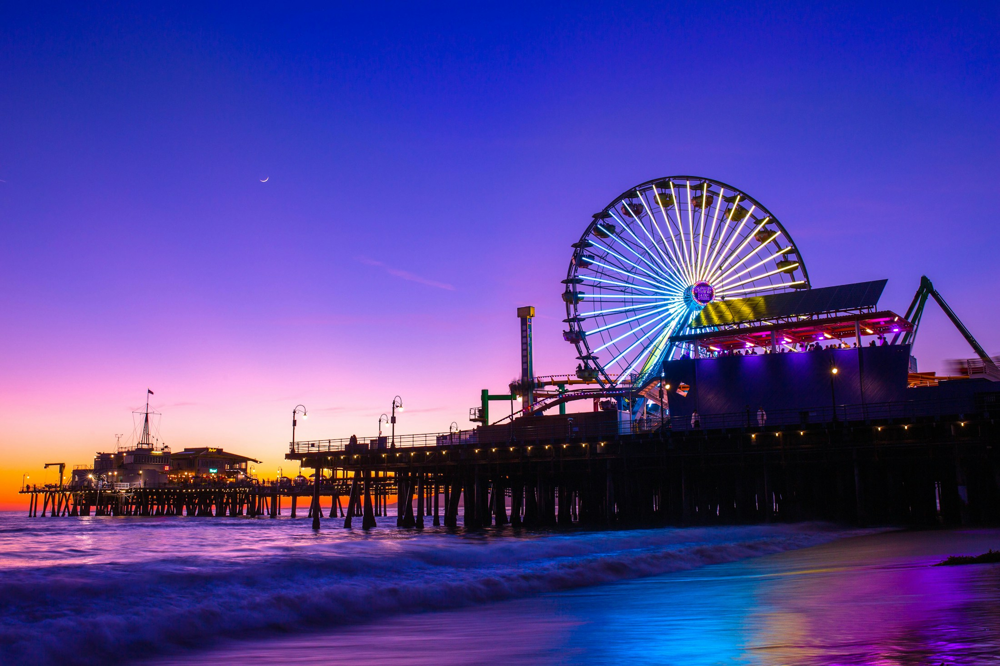
LUNDI · FIN DE JOURNÉE
Le soleil descend sur le Pacifique.
On est à Santa Monica. Tous les cinq.
J04 · MARDI · LE CINÉMA À CIEL OUVERT
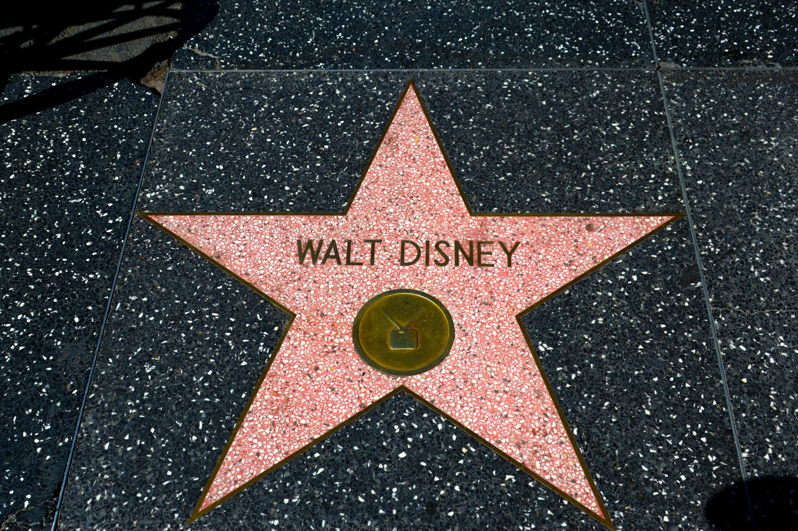
Walk of Fame, TCL Chinese Theatre
et Dolby Theatre.
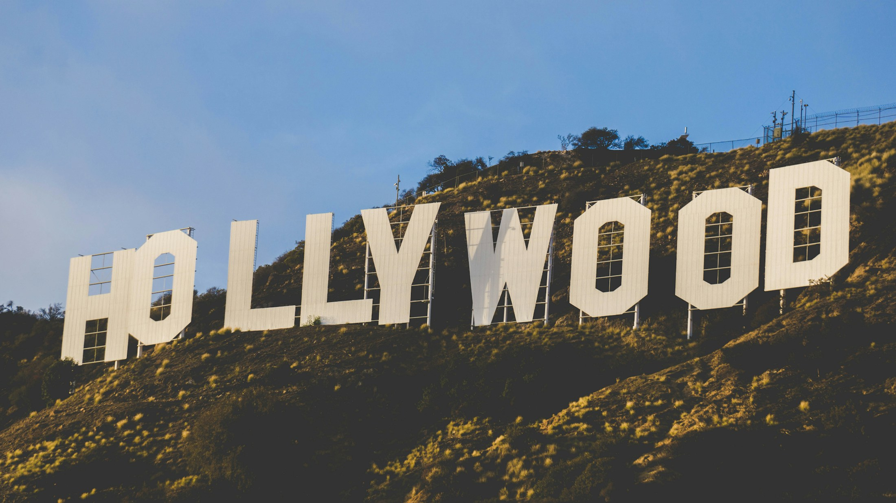
Un point de vue pour la photo.
Pas une randonnée obligatoire.
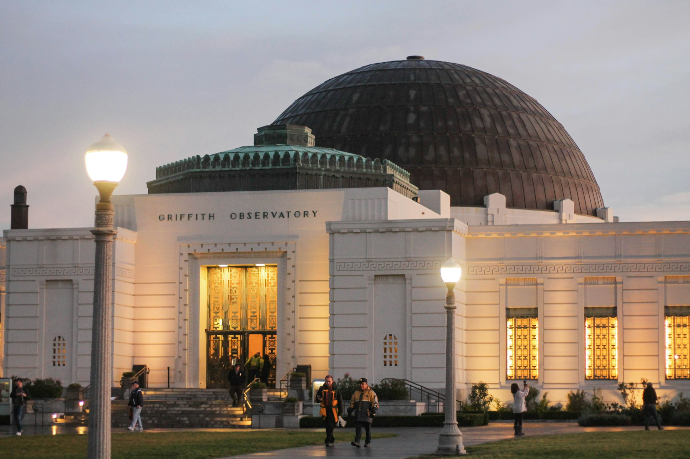
Los Angeles à nos pieds.
Golden hour si le match le permet.
On avance Griffith dans l’après-midi en cas de match le soir. Le coucher de soleil et le coup d’envoi ne se négocient pas.
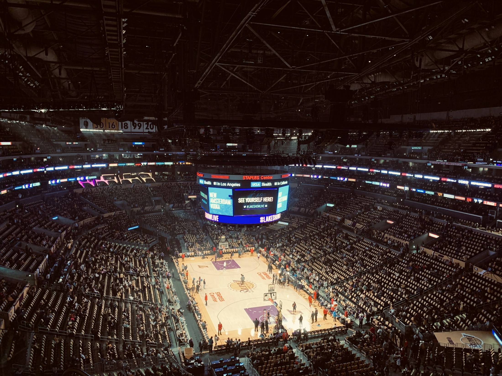
MARDI SOIR · SELON LES DATES DU VOYAGE
Un vrai match américain. Et cinq nouveaux supporters.
Crypto.com Arena / Intuit Dome
Plutôt automne → printemps
Dodger Stadium
Plutôt printemps → automne
SoFi Stadium · automne / hiver
À déplacer : rarement un mardi
Match choisi une fois les dates fixées. Disponibilité, saison et prix décident ; aucune rencontre n’est encore réservée.
J05 · MERCREDI · DEUXIÈME JOURNÉE CHILL
Après GTA, Hollywood et peut-être un match,
on appuie sur pause.
Les meilleures anecdotes
ne sont pas toujours au planning.
J06 · JEUDI · PACIFIC COAST HIGHWAY
Le soleil. Le Pacifique. Notre voiture.
Aujourd’hui, le trajet est une activité.
Un premier arrêt face à l’océan.
La plage, les surfeurs, les photos.
Balade et sable, selon l’envie.
Un verre avec vue, puis la villa.
Arrêts et accès à confirmer selon l’état de la PCH. Conducteur sobre, version soft face à l’océan.
J07 · VENDREDI · DERNIÈRE GROSSE JOURNÉE À LA
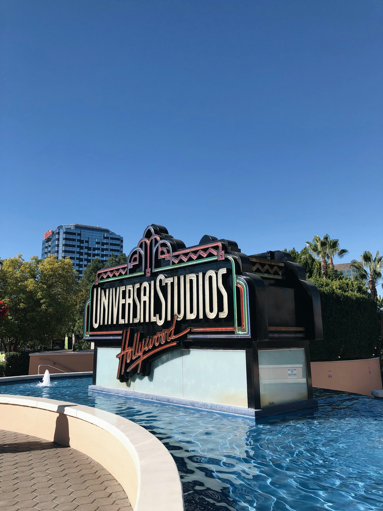
Une journée complète : parc, Studio Tour,
décors et attractions. Du cinéma grandeur nature.
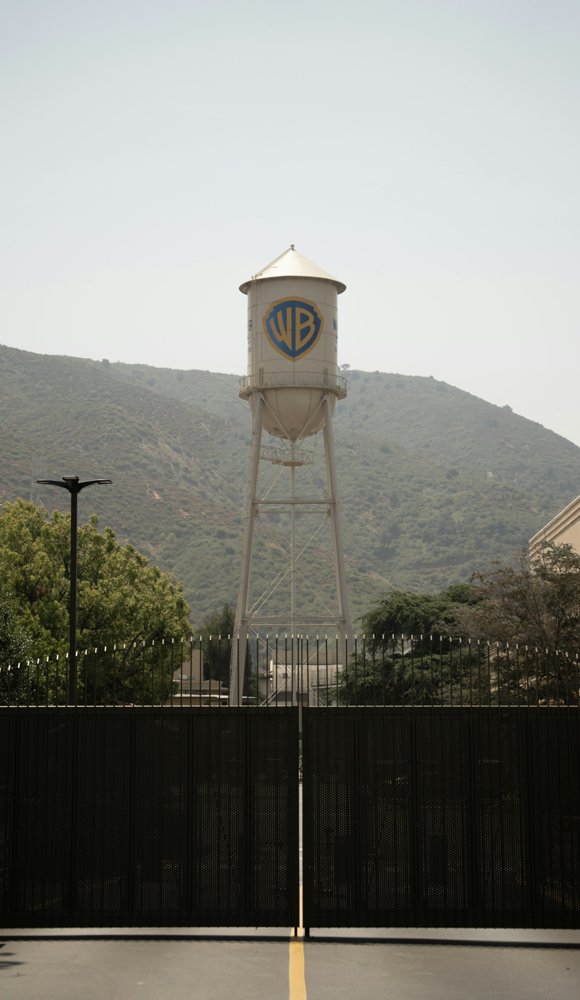
Les plateaux, les décors, les métiers.
Et du temps libre l’après-midi.
* Attractions et accès selon ouverture et billet. On choisit un des deux studios ; Universal est inclus dans le scénario budget.
J08 · SAMEDI · CHANGEMENT D’AMBIANCE
Une nuit sur ou près du Strip. Aucun véhicule à louer.
On garde du temps pour les transferts et les formalités à l’aéroport.
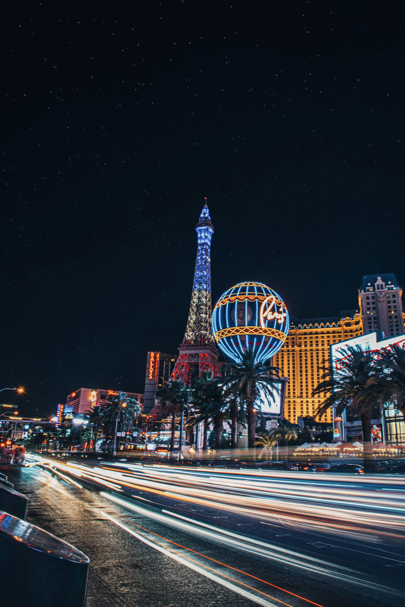
NEXT STOPNEVADA · APRÈS LE COUCHER DU SOLEIL
Une nuit. Un autre monde.
Et absolument aucune subtilité dans la déco.
SAMEDI SOIR · LES LUMIÈRES S’ALLUMENT
Bellagio → Caesars Palace → Venetian.
Casinos, bars, le Strip de nuit. Club si l’envie y est.
On finit par retrouver l’hôtel.
Seulement si l’énergie suit.
La chambre d’hôtel est réservée.
Son utilisation reste optionnelle.
Chacun son rythme. Budget casino fixé à l’avance, hors budget voyage.
Alcool et jeu réservés aux 21 ans et plus. Retour à pied ou en VTC.
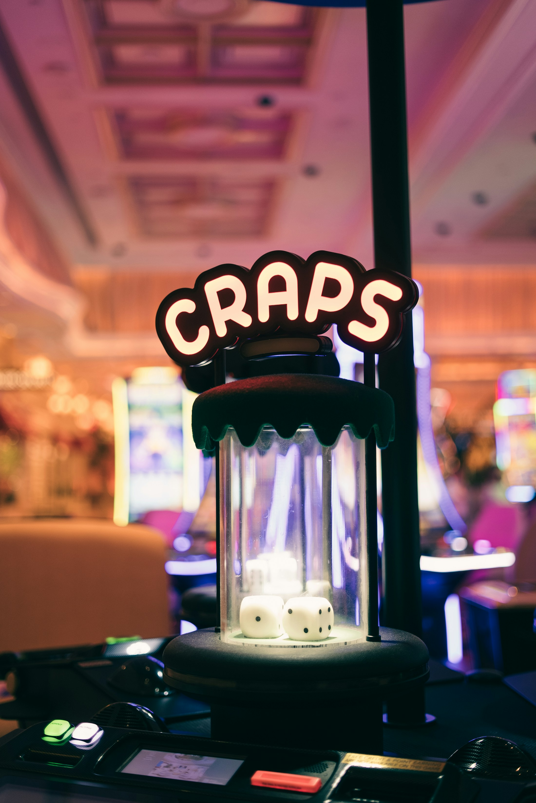
J09 · DIMANCHE · LA JOURNÉE DE TRANSFERT
Brunch. Un dernier regard sur le Strip.
Hôtel. Douche. Repos.
New York a trois heures d’avance sur Vegas.
Exemple indicatif : départ 13 h → arrivée vers 21 h.
Cette journée sert à voyager. On n’y ajoute rien.
Horaire illustratif, pas un vol réservé. Transfert vers l’hôtel à ajouter après l’atterrissage.
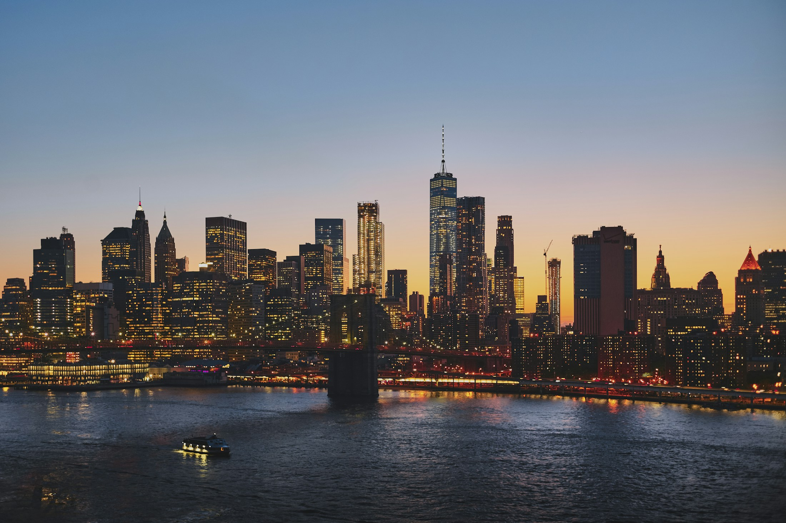
NEW YORK CITY · LE DERNIER ACTE
Après les palmiers et les néons,
les gratte-ciel de Manhattan.
J10 · LUNDI · UNE JOURNÉE, L’ESSENTIEL
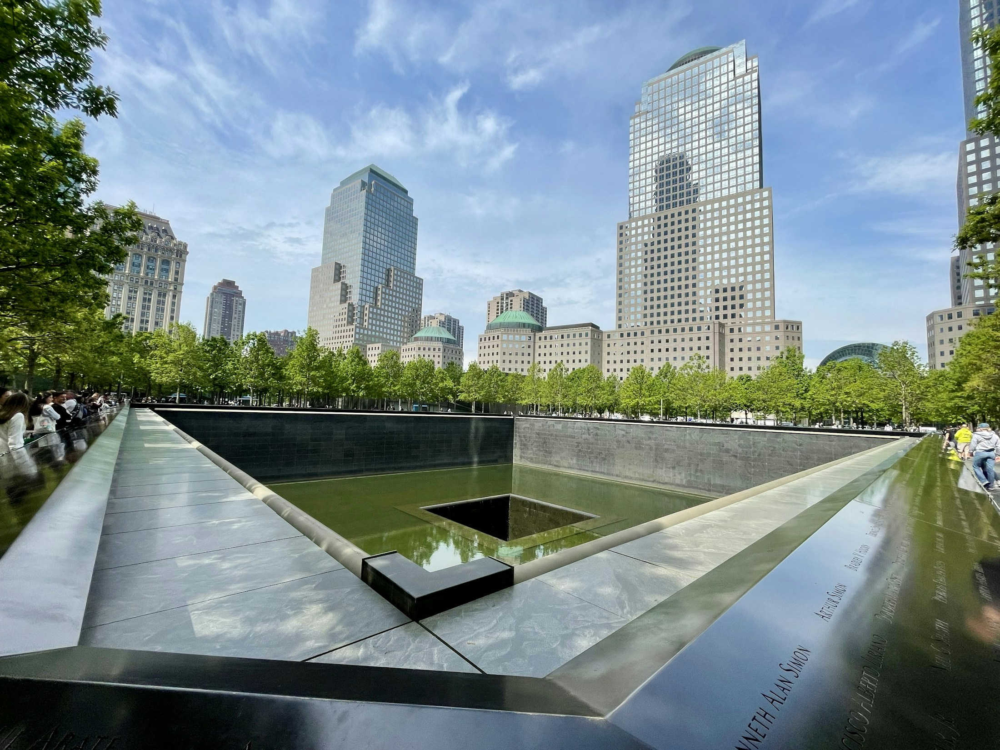
MATIN · LOWER MANHATTANGround Zero, 9/11 Memorial,
One World Trade Center en extérieur.
Wall Street si on a le temps.
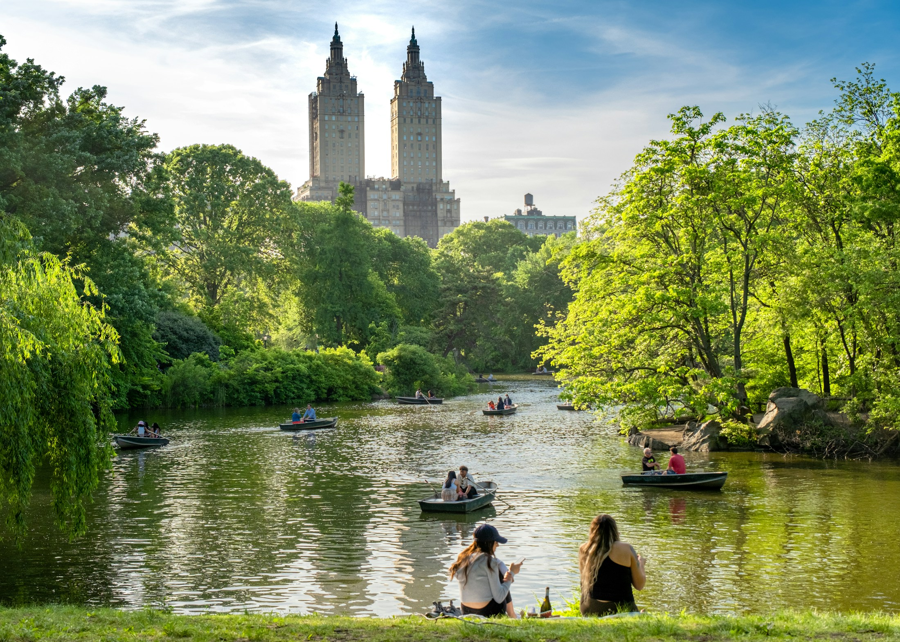
MÉTRO → CENTRAL PARKBalade dans le sud du parc.
Déjeuner dans le secteur.
On respire au milieu de la ville.
5th Avenue & Rockefeller Center.
Grand Central selon le temps.
Empire State en extérieur, en bonus.
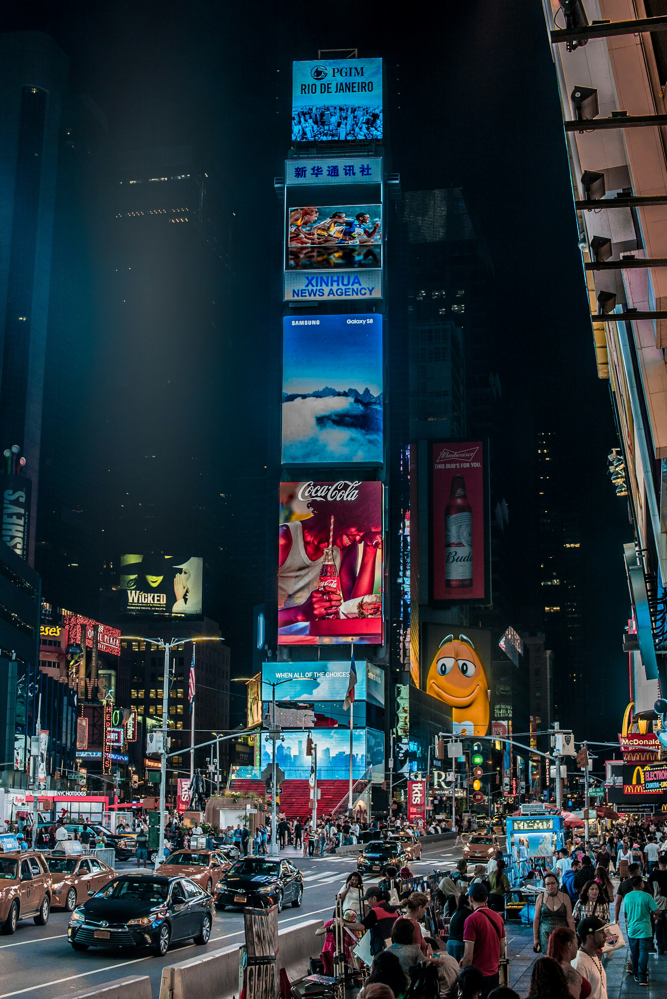
LUNDI SOIR · LA DERNIÈRE GRANDE IMAGE
Times Square. De nuit. Ensemble.
J11 · MARDI · LE RETOUR
Un dernier petit-déj new-yorkais.
Une balade et quelques souvenirs si l’horaire le permet.
Transfert vers l’aéroport avec une vraie marge.
Arrivée à Paris le mercredi, selon les horaires.
LE VOYAGE QUI RESPIRE
GTA · Hollywood + sport
Malibu · Universal
Dimanche & mercredi
La villa fait partie du voyage.
On s’installe.
On prend nos marques.
LE RÊVE, AVEC LES PIEDS SUR TERRE
CHACUN.
11 jours — Los Angeles + Vegas + New York
Objectif à construire avec des devis. Estimations de préparation, dates encore ouvertes.
LES CHIFFRES · 1 / 2 · PAR PERSONNE
À vérifier dans les devis : bagages, assurances, franchise,
conducteurs supplémentaires et éventuelle majoration d’âge.
LES CHIFFRES · 2 / 2 · PAR PERSONNE
Fourchettes de travail fournies pour le projet, pas des offres réservables.
Logements : comparer les totaux avec taxes, ménage et capacité réelle.
CHOISIR NOTRE ENVELOPPE
3 390 € en additionnant tous
les bas de fourchette.
La répartition des deux slides
précédentes, poste par poste.
300 € de plus que la cible
par personne.
3 300 € serait légèrement sous le minimum détaillé. Tous les hauts de fourchette totalisent 4 880 € / personne : 4 000 € est une enveloppe à piloter, pas un maximum garanti.
La cible de 3 700 € demande de réserver aux bons tarifs. Si les devis montent, on ajuste les dates ou certaines prestations avant de réserver.
PAS DE MAUVAISE SURPRISE ENTRE POTES
On peut partager les pâtes. Pas forcément l’addition de Rodeo Drive.
LE PROCHAIN PAS EST SIMPLE
Congés, météo souhaitée et saison sportive.
3 700 € visés, 4 000 € à piloter.
Vols, villa, voiture, hôtels et activités.
On fixe le match et les horaires à ce moment-là.
Vérifier passeports / ESTA, assurance voyage,
âge du loueur et conditions d’annulation.
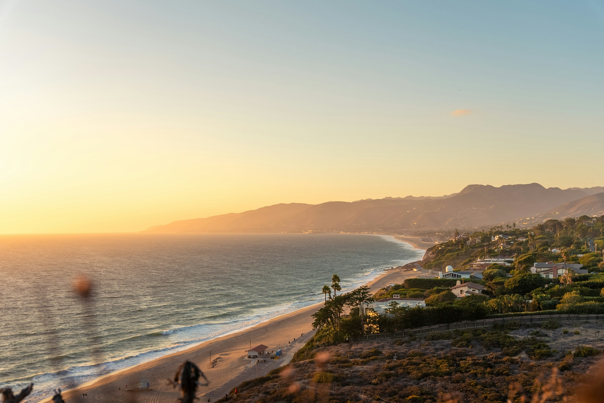
Le plus dur,LOS ANGELES · LAS VEGAS · NEW YORK
5 potes. 11 jours. 3 villes. Un voyage.
Le prochain souvenir commence par un oui.